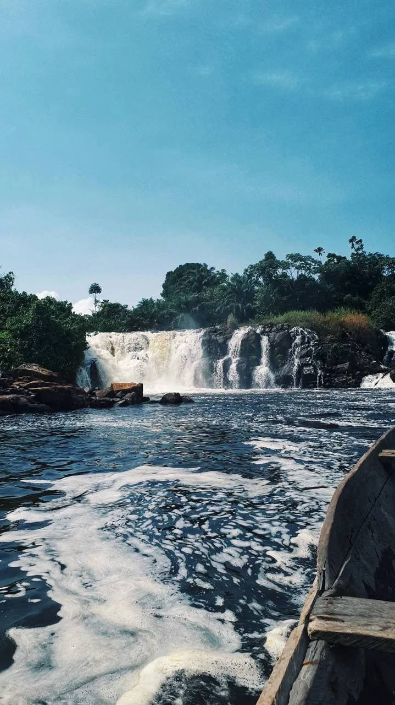

CAMEROON • TOURISM • COASTLINE
A coastal city on the Gulf of Guinea known for beaches, tourism, volcanic landscapes and growing investment opportunities.
Limbe is one of Cameroon's most popular coastal destinations and an important center for tourism, hospitality and recreation. Located at the foot of Mount Cameroon, the city combines oceanfront living, natural beauty and economic activity.
Its unique location, pleasant climate and growing tourism infrastructure continue attracting visitors, investors and entrepreneurs.
Hotels, attractions and local experiences.
Black sand beaches and coastal lifestyle.
Residential and tourism developments.
Hospitality, services and entrepreneurship.
Parks, wildlife and eco-tourism.
Future development opportunities.
Limbe is one of Cameroon's leading tourism destinations. The city welcomes visitors looking for beaches, cultural experiences, nature activities and weekend escapes from larger urban centers.
The hospitality sector continues growing through new hotels, restaurants and recreational facilities.
Located near Africa's highest volcano, Limbe serves as a gateway to Mount Cameroon and surrounding natural attractions. The region offers hiking, eco-tourism and unique landscapes rarely found elsewhere in West and Central Africa.
The mountain remains one of the area's most significant natural landmarks.
Limbe is famous for its volcanic black sand beaches, offering a distinctive coastal experience along the Gulf of Guinea. Popular beach areas attract both residents and visitors throughout the year.
The coastline contributes significantly to the city's tourism appeal and investment potential.
The Limbe Wildlife Centre is one of Cameroon's best-known conservation projects, providing care for rescued wildlife while supporting environmental education and eco-tourism.
The center highlights the region's rich biodiversity and commitment to conservation.
Investment in tourism infrastructure, hospitality, transportation and coastal development continues creating new opportunities for business and real estate growth.
Limbe is well positioned to become one of Central Africa's premier tourism and lifestyle destinations.